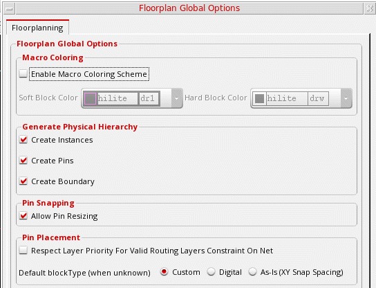
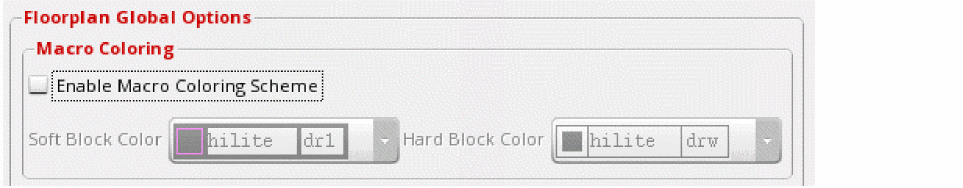
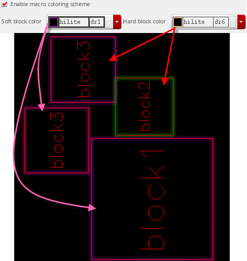
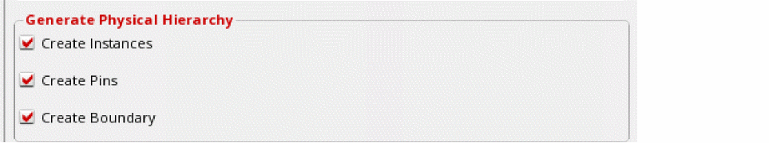
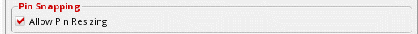
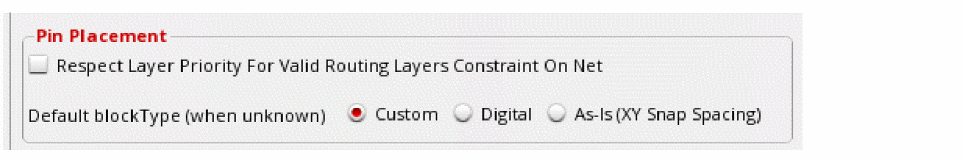
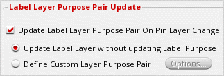

Floorplanner Global Options
You can use the Floorplan Global Options form to set global options for either the current cellview or the current session. In Layout EXL and higher tiers, these settings are available in the Design Planning and Options form.
To set global options using Floorplan Global Options form:
-
Choose Floorplan – Floorplan Global Options.
The Floorplan Global Options form is displayed.
 -
In the Macro Coloring section, you can use the color coding options to assign different highlight colors for hard and soft blocks so that they are visually distinguishable in the layout canvas.
 - Select the Enable macro coloring scheme check box to enable color coding of hard and soft blocks.
- Select a highlight color for soft blocks from the Soft block color drop-down list.
- Select a highlight color for hard blocks from the Hard block color drop-down list.
-
Click OK or Apply to view the changes in the layout canvas.
The soft and hard blocks are highlighted in different colors, as shown above.
These visualization settings are not restricted to the current design. These settings are automatically applied to all layout cellviews that were open when you defined the color settings. To reset the settings, use either the options in the form or their corresponding environment variables. -
In the Generate Physical Hierarchy section, use the Create Instances, Create Pins, and Create Boundary check boxes to specify whether instances, pins, and the PR boundary need to be automatically re-created when the physical hierarchy is generated or the components and nets are updated.
 -
In the Pin Snapping section, select the Allow Pin Resizing option to specify whether pins need to be resized during pin snapping.
 -
In the Pin Placement section, select Respect layer priority for valid routing layers constraint on net option to specify the layer priority to be followed while placing pins during pin optimization. When this option is not selected (default state), the Pin Optimizer places pins on layers that are closest to the connected pin.
 - Select the Default blockType (when unknown) option to specify the default block type for soft blocks when the assigned block type is not custom or digital. The default value is Custom. You can set it to Custom, Digital and As-Is.
-
In the Label Layer Purpose Pair Update section, you can define the label re-layering behavior by selecting one of the options.
 - Select Update Label Layer without updating Label Purpose (default) to re-layer labels to match the pins, but their purposes remain unchanged.
- Select Define Custom Layer Purpose Pair to define the layer and purpose to which labels are to be moved.
- Click OK.
Related Topics
Updating Label Layer-Purpose Pairs on Pin Layer Changes
Return to top